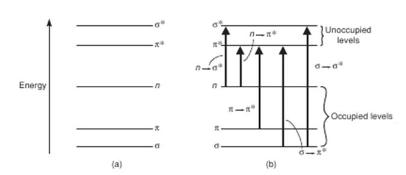
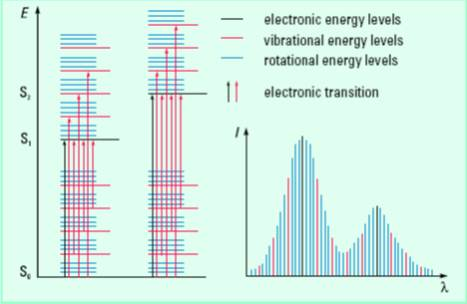

रासायनिक विज्ञान→आणविक अवशोषण स्पेक्ट्रोस्कोपी लैब→प्रयोगों की सूची
UV-Visible अवशोषण स्पेक्ट्रोस्कोपी के साथ परिचित
रंग कई पदार्थों का एक महत्वपूर्ण गुण है। हम धातु को उसके चमकदार नारंगी-पीले रंग से पहचान सकते हैं। मामलों के साथ प्रकाश या विद्युत चुम्बकीय विकिरण की बातचीत से विद्युत चुम्बकीय विकिरण के बिखरने, अवशोषण, प्रतिबिंब, विवर्तन आदि होते हैं। ये प्रभाव पदार्थ में रंग को जन्म दे सकते हैं। यदि कुछ प्रकाश अवशोषित होता है और बाकी पदार्थ के माध्यम से प्रेषित होता है, तो पदार्थ को प्रेषित विकिरण के संबंध में एक पारदर्शी माध्यम कहा जाता है। अपारदर्शी माध्यम में लगभग सभी प्रकाश परिलक्षित होते हैं। जब प्रकाश के सभी रंग मौजूद होते हैं तो सफेद रंग का उत्पादन होता है। दूसरी ओर, जब प्रकाश के सभी रंग अनुपस्थित होते हैं (घटाया जाता है, फ़िल्टर किया जाता है या अवशोषित किया जाता है), तो काला रंग उत्पन्न होता है। एक नोट कर सकता है कि पूरे दृश्यमान स्पेक्ट्रम को रंगों के तीन मुख्य क्षेत्रों में विभाजित किया जा सकता है: लाल, हरा और नीला (नीचे चित्र 1 देखें)। इसके अलावा यह भी ध्यान दिया जाता है कि इस स्पेक्ट्रम में, जहां दो रंग मिलकर एक और रंग बनाते हैं जैसे लाल और हरे और नीले और नीले रंग के संयोजन से पीला रंग। इसी तरह, नीला-लाल मिश्रण मैजेंटा रंग का उत्पादन करता है। दो रंगों को मिलाकर तैयार किए गए रंगों को उस रंग का पूरक कहा जाता है जिसे इसे बनाने के लिए इस्तेमाल नहीं किया गया था। उदाहरण के लिए, लाल, हरे और नीले रंगों में से, लाल और हरे रंग का संयोजन पीले रंग का उत्पादन करता है (नीला का उपयोग नहीं किया गया है) और इसलिए नीले रंग का पूरक रंग पीला है। रंगों की एक जोड़ी जो सफेद प्रकाश का उत्पादन करने के लिए जोड़ती है उन्हें पूरक रंग कहा जाता है, क्योंकि एक साथ वे स्पेक्ट्रम को पूरा करते हैं। हमने पहले देखा है कि संपूर्ण दृश्यमान स्पेक्ट्रम को मुख्य रूप से रंगों के 3 मुख्य क्षेत्रों में विभाजित किया जा सकता है: लाल, हरा और नीला (नीचे चित्र 1 देखें), वर्णक्रम के लगभग एक तिहाई (1/3) योगदान करने वाले रंग का प्रत्येक क्षेत्र । इसलिए, जब लाल और हरे रंग का प्रकाश पीले रंग का उत्पादन करने के लिए गठबंधन करता है, तो पूरे दृश्यमान स्पेक्ट्रम का दो-तिहाई (लाल + 1/3 हरे रंग से 1/3) का उपयोग किया जाता है और केवल एक-तिहाई (नीले क्षेत्र से) छोड़ दिया जाता है । इसलिए इस 1/3 नीले क्षेत्र को पीले रंग के 2/3 (लाल से 1/3 हरे रंग का 1/3) के अलावा पूरे स्पेक्ट्रम को पूरा करता है। इस प्रकार, नीला पीला और इसके विपरीत का पूरक रंग है।

आकृति 1।a) दृश्यमान स्पेक्ट्रम के मुख्य तीन क्षेत्र। बी) तीन प्रमुख रंग additively विभिन्न रंगों (सफेद पृष्ठभूमि की अनुपस्थिति में) और सफेद प्रकाश का उत्पादन करने के लिए गठबंधन करते हैं। (c) पूरक रंग। विपरीत त्रिकोण पूरक रंगों के अनुरूप हैं। त्रिकोण में कोई भी रंग दो आसन्न त्रिकोणों पर रंगों के संयोजन से उत्पन्न होता है। (d) रंगों के विभिन्न घटिया संयोजनों द्वारा रंगों का निर्माण (सफेद पृष्ठभूमि की उपस्थिति में)।
अन्य रंगों और पूरक रंगों का उत्पादन करने वाले रंगों का संयोजन निम्न आकृति में रंग बहुभुज के रूप में दिया जाता है। लाल रंग का पूरक रंग सियान है और हरे रंग का मैजेंटा है। हमारे अधिकांश व्यावहारिक अनुप्रयोगों में जैसे कि पेंटिंग, फोटोग्राफी, प्रिंटिंग, फैब्रिक डाइंग आदि, रंगों को घटिया सिद्धांतों द्वारा उत्पन्न किया जाता है। ऐसे मामलों में, एक सफेद पृष्ठभूमि के साथ या सभी रोशनी की उपस्थिति से शुरू होता है और इस सफेद प्रकाश स्पेक्ट्रम से कुछ रोशनी घटाता है और इससे निकलने वाले अन्य रंगों के संयोजन को देखता है। कुछ प्रकाश को घटाने के लिए पेंट, स्याही, फिल्टर आदि का उपयोग किया जाता है। घटिया मिश्रण सिद्धांत द्वारा रंग पीढ़ी को समझने के लिए, हम निम्नलिखित उदाहरण पर विचार करते हैं। आइए हम कागज के एक टुकड़े पर कुछ स्याही डालें। दृश्यमान प्रकाश के लगभग सभी रंगों के प्रतिबिंबित होने के कारण कागज के टुकड़े में एक सफेद पृष्ठभूमि होती है। स्याही इस स्पेक्ट्रम से कुछ प्रकाश को घटा (अवशोषित) करेगी और बाकी प्रकाश के परावर्तन की अनुमति देगी। अब अगर हम मानते हैं कि स्याही पीले रंग को अवशोषित (अवशोषित) करती है (लाल और हरे रंग के क्षेत्रों का संयोजन), तो स्पेक्ट्रम से लाल और हरे रंग अनुपस्थित होते हैं और मुख्य रूप से स्पेक्ट्रम का नीला क्षेत्र परिलक्षित होता है। इसलिए स्याही नीले रंग की दिखाई देगी। इसी तरह एक पीली स्याही लाल और हरी रोशनी को दर्शाती है और दूसरी नीली रोशनी को अवशोषित करती है। एक रंग इसके पूरक रंग को घटाता है। आइए हम एक पारदर्शी समाधान का निम्नलिखित उदाहरण देखें। निम्नलिखित चित्र 2 में, मुख्य रूप से हरे रंग की रोशनी को अवशोषित किया जाता है और इसके पूरक रंग, मैजेंटा को समाधान के रंग के रूप में देखा जाता है।

चित्र 2।एक समाधान में प्रकाश अवशोषण और रंग पीढ़ी।
प्रकाश ऊर्जा के अवशोषण में विकिरण क्षेत्र से अवशोषक तक ऊर्जा का स्थानांतरण शामिल होता है, जिसके परिणामस्वरूप अवशोषक एक निम्न से उच्च ऊर्जा स्तर पर परिवर्तित होता है। यूवी-दृश्य प्रकाश के अवशोषण से इलेक्ट्रॉनों की उत्तेजना एक ऊर्जा स्तर से दूसरे (अन्य स्थितियों के अधीन) हो सकती है। यूवी-दृश्य प्रकाश उत्तेजना के तहत इलेक्ट्रॉनिक संक्रमण का अध्ययन यूवी-दृश्य अवशोषण स्पेक्ट्रोस्कोपी के रूप में जाना जाता है। एक अणु में, जमीन और उत्साहित इलेक्ट्रॉनिक ऊर्जा राज्यों के बीच ऊर्जा रिक्ति नाभिक और इलेक्ट्रॉनों के बीच संबंध शक्ति द्वारा निर्धारित की जाती है। इसलिए, एक संक्रमण की विशेषता ऊर्जा और अवशोषित विकिरण की तरंग दैर्ध्य परमाणुओं के एक समूह के गुण हैं। ऐसे अवशोषण के कारण परमाणुओं के समूह को एक क्रोमोफोर कहा जाता है। जब कोई π क्रोमोफोर से जुड़ा होता है, तो अहंकारी युग्म ई, जैसे ओएच, एनएच, एसएच आदि के साथ पदार्थ आमतौर पर अवशोषण को अधिकतम तरंग दैर्ध्य तक ले जाते हैं। इन सबस्टिट्यूट को ऑक्टोक्रोम कहा जाता है। पदार्थ एक क्रोमोफोर पर निम्नलिखित चार प्रभावों में से कोई भी हो सकते हैं: (i) बाथोक्रोमिक शिफ्ट (लाल शिफ्ट) - एक तरंगदैर्ध्य तरंगदैर्ध्य (λ) या कम ऊर्जा। (ii) हाइपोक्रोमिक शिफ्ट (नीली पारी) - छोटी λ या उच्च ऊर्जा में शिफ्ट। (iii) हाइपरक्रोमिक प्रभाव - एक बैंड के अवशोषण (तीव्रता) में वृद्धि। (iv) हाइपोक्रोमिज्म: एक बैंड के अवशोषण (तीव्रता) में कमी। विभिन्न पदार्थ प्रकाश की विभिन्न तरंग दैर्ध्य को अवशोषित करते हैं। इसलिए, किसी पदार्थ द्वारा अधिकतम अवशोषण की तरंग दैर्ध्य उस पदार्थ के विशिष्ट गुणों में से एक है।
सबसे संभावित संक्रमण अक्सर सबसे अधिक कब्जे वाले आणविक कक्षीय (एचओएमओ) से सबसे कम निरपेक्ष आणविक कक्षीय (एलयूएमओ) तक होता है। पॉलीऐटोमिक अणुओं में, प्रारंभिक और अंतिम ऑर्बिटल्स को निर्दिष्ट करके इलेक्ट्रॉनिक संक्रमण को वर्गीकृत करना सुविधाजनक है। उदाहरण के लिए, यदि एक इलेक्ट्रॉनिक संक्रमण एक संबंध पै (b) कक्षीय से प्रतिरक्षी पीआई कक्षीय (electronic) तक होता है*), हम इसे एक π → a कहते हैं*संक्रमण और इसी तरह एक nonbonding orbital (n) से एक संक्रमण के लिए एक एंटीबॉडी pi कक्षीय (π) के लिए*) n → → के रूप में जाना जाता है*संक्रमण। निम्न चित्रा 3 योजनाबद्ध रूप से कुछ ऐसे बदलाव दिखाता है

चित्र तीन।विशिष्ट इलेक्ट्रॉनिक संक्रमण और प्रकाश अवशोषण।
परमाणुओं के मामलों में, इस तरह के संक्रमणों को तरंग दैर्ध्य पर बहुत संकीर्ण अवशोषक वर्णक्रमीय बैंड में परिणाम होना चाहिए, जिसमें अवशोषित प्रजातियों के ऊर्जा स्तर में अंतर होता है। हालांकि, अणुओं के मामलों में व्यापक वर्णक्रमीय बैंड अक्सर देखे जाते हैं। चूँकि इलेक्ट्रॉनिक ऊर्जा कंपन और घूर्णी ऊर्जाओं से अधिक होती है, इसलिए इलेक्ट्रॉनिक ऊर्जा स्तरों पर कंपन और घूर्णी ऊर्जा का स्तर बहुत अधिक होता है। इसलिए, कोई भी इलेक्ट्रॉनिक संक्रमण कई कंपन और घूर्णी संक्रमण (कुछ स्थितियों के अधीन) के साथ जुड़ा हो सकता है, विभिन्न ऊर्जाएं व्यापक बैंड को जन्म देती हैं (नीचे चित्र 4 देखें)। विलायक-विलेय इंटरैक्शन भी वर्णक्रमीय बैंड को चौड़ा करते हैं।

चित्र 4।यूवी-दृश्य वर्णक्रमीय बैंड के अणुओं और उत्पत्ति में इलेक्ट्रॉनिक संक्रमण। S सिंगल इलेक्ट्रॉनिक एनर्जी स्टेट के लिए है।
चार्ज-ट्रांसफर संक्रमण एक अन्य प्रकार का इलेक्ट्रॉनिक संक्रमण है जो कई संक्रमण धातु परिसरों और अकार्बनिक पिगमेंट के तीव्र रंग के लिए जिम्मेदार है। चार्ज ट्रांसफर ट्रांज़िशन में, एक इलेक्ट्रॉन धातु के डी ऑर्बिटल्स से लिगैंड्स या υice aersa में रिक्त ऑर्बिटल्स में से एक में स्थानांतरित होता है। उदाहरण के लिए, O परमाणु से Mn परमाणु तक एक इलेक्ट्रॉन स्थानांतरण जलीय परमैंगनेट आयन, MnO4 के तीव्र बैंगनी रंग का कारण बनता है-।
एक विशिष्ट यूवी-दृश्य स्पेक्ट्रोफोटोमीटर में निम्नलिखित डिज़ाइन घटक होने चाहिए: एक प्रकाश स्रोत (जो एक विशिष्ट तरंग दैर्ध्य या तरंग दैर्ध्य में प्रकाश उत्पन्न करता है), एक फैलाव उपकरण (विभिन्न तरंगों पर प्रकाश की विभिन्न तरंग दैर्ध्य का कारण बनता है), नमूना कक्ष, और एक या अधिक डिटेक्टर (एस)। VU- दृश्यमान स्पेक्ट्रोफोटोमीटर में दो प्रकाश स्रोत हो सकते हैं: एक यूवी श्रेणी के लिए (जैसे कि एक ड्यूटेरियम आर्क लैंप) और दूसरा दृश्यमान रेंज के लिए (जैसे, टंगस्टन-हैलोजन लैंप)।
फैलाव डिवाइस स्रोत प्रकाश को तरंगदैर्घ्य के "इंद्रधनुष" (यानी, प्रकाश के विभिन्न तरंग दैर्ध्य में) में फैलाता है, जो तब नमूना को निर्देशित किया जाता है। प्रिज्म और होलोग्राफिक ग्रेटिंग दो फैलाव उपकरण हैं जो आमतौर पर यूवी-दृश्य स्पेक्ट्रोफोटोमीटर में उपयोग किए जाते हैं। एक पारंपरिक स्पेक्ट्रोफोटोमीटर में, फैलाव उपकरण के आसपास प्रवेश भट्ठा और एक निकास भट्ठा एक साथ मोनोक्रोमेटर का गठन करते हैं। मोनोक्रोमेटर से निकलने वाली लाइट सैंपल ब्लैंक और / या सैंपल से होकर गुजरती है। संचरित प्रकाश की तीव्रता को फोटोडेटेक्टर से मापा जाता है। Photomultiplier tube (PMTs) या फोटोडियोड (फोटोोडिओड सरणी) को आमतौर पर डिटेक्टर के रूप में उपयोग किया जाता है। नमूना के पीछे फोटोडेटेक्टर प्रकाश उत्तेजना प्राप्त करता है और एक एनालॉग इलेक्ट्रॉनिक वर्तमान उत्पन्न करता है, जिसे बाद में एक प्रयोग करने योग्य प्रारूप में बदल दिया जाता है और आगे के विश्लेषण के लिए कंप्यूटर में खिलाया जाता है। एक पारंपरिक स्पेक्ट्रोफोटोमीटर में, स्पेक्ट्रम को क्रमिक तरीके से प्राप्त किया जाता है, समय के एक समारोह के रूप में एक के बाद एक तरंग दैर्ध्य। डायोड एरेस स्पेक्ट्रोफोटोमीटर में, सैंपल से गुजरने के बाद पॉलीक्रोमैटिक लाइट पॉलीक्रोमेटर के प्रवेश द्वार स्लिट पर केंद्रित होता है। यह प्रेषित प्रकाश फिर डायोड सरणी पर फैलाया जाता है जहां प्रत्येक डायोड स्पेक्ट्रम के एक हिस्से को मापता है। यही है, डायोड सरणी स्पेक्ट्रोफोटोमीटर में, डिटेक्टर सभी तरंग दैर्ध्य को एक साथ देखता है।
प्रकाश किरण के आधार पर, दो अलग-अलग प्रकार के स्पेक्ट्रोफोटोमीटर का उपयोग किया जाता है: एकल-बीम और डबल-बीम स्पेक्ट्रोफोटोमीटर। एकल-बीम में पारंपरिक और डायोड सरणी स्पेक्ट्रोफोटोमीटर दोनों शामिल हैं, जहां एक एकल प्रकाश बीम का उपयोग पहले नमूने को खाली करने और फिर नमूना को अलग से करने के लिए किया जाता है। एक डबल बीम साधन संदर्भ (नमूना रिक्त) ऑप्टिकल पथ और नमूना ऑप्टिकल पथ के बीच प्रकाश किरण को विभाजित करता है और उनके बीच प्रकाश की तीव्रता की तुलना करता है। बीम का विभाजन दो तरह से पूरा होता है। एक स्थिर विधि में, आंशिक रूप से संचारण दर्पण का उपयोग किया जाता है जो प्रकाश को संदर्भ सेल और नमूना सेल में एक साथ भेजने की अनुमति देता है। कुछ स्पेक्ट्रोफोटोमीटर में, एक "हेलिकॉप्टर" प्रकाश पथ को वैकल्पिक करता है। दोनों स्पेक्ट्रोफोटोमीटर के दूसरे पर कुछ फायदे हैं। एक प्रकाश स्रोत, डिटेक्टरों और संबंधित इलेक्ट्रॉनिक उपकरणों की बेहतर स्थिरता की उम्मीद करता है, जिसमें डबल बीम इंस्ट्रूमेंट होता है। नुकसान में मोनोक्रोमेटर तक पहुंचने से पहले बीम को पुनर्संयोजित करने में आवश्यक सटीकता शामिल है। दर्पण, अन्य प्रकाशिकी और उनके कोटिंग्स की गुणवत्ता और इन उपकरणों पर धूल का निर्माण सिंगल बीम उपकरणों की तुलना में दोहरे बीम उपकरणों को बनाए रखने के लिए कुछ अधिक कठिन बना देता है। एकल बीम उपकरण में, केवल एक क्युवेट धारक मौजूद होता है, इसलिए, दो माप आवश्यक हैं। नमूना और नमूना रिक्त (संदर्भ) एक साथ एक माप में स्कैन किया जाता है जिसमें डबल बीम उपकरण होता है, जिसमें दो सेल धारक होते हैं। डायोड एरे स्पेक्ट्रोफोटोमीटर एक मल्टीचैनल उपकरण है, हालांकि दो मापों की आवश्यकता होती है, लेकिन माप बहुत तेज (0.1s) हैं और कम रिज़ॉल्यूशन वाले हैं।
एक विशिष्ट डबल-बीम यूवी-विज़िबल स्पेक्ट्रोफोटोमीटर के स्कैमैटिक्स को नीचे चित्र 5 में दिखाया गया है।

चित्र 5।एक विशिष्ट डबल-बीम यूवी-विजिबल स्पेक्ट्रोफोटोमीटर के स्कैमैटिक्स।
प्रकाश के अवशोषण को आमतौर पर संप्रेषण (टी) या शोषक (ए) के संदर्भ में प्रयोगात्मक रूप से मापा जाता है। संप्रेषण को T = I / I के रूप में परिभाषित किया गया है0, जहां मैं नमूना के माध्यम से गुजरने के बाद प्रकाश की तीव्रता है और Io प्रारंभिक प्रकाश की तीव्रता है। A और T का संबंध है: $$ A = -log_ {10} T = - log_ {10} {I \ over I_ {0}} $ $
रंगीन अवशोषण और स्पेक्ट्रोफोटोमीटर जैसे आधुनिक अवशोषण माप उपकरण आमतौर पर डेटा को संप्रेषण,% -transmittance, या शोषक के रूप में प्रदर्शित कर सकते हैं। एक स्पेक्ट्रोफोटोमीटर में, प्रकाश की तरंग दैर्ध्य की एक पूरी श्रृंखला एक पदार्थ (एक सेल (नमूना सेल) में लिया गया एक समाधान या एक समान कंटेनर (संदर्भ सेल) के माध्यम से गुजरती है जिसमें केवल विलायक होता है। नमूने में प्रवेश करने वाले प्रकाश की तीव्रता और नमूना से बाहर निकलने वाले प्रकाश की तुलना एक उपयुक्त स्पेक्ट्रम के उत्पादन से की जाती है। वास्तव में, एक अवशोषण प्रयोग में प्रकाश क्षीणन कई प्रक्रियाओं से होता है जैसे कि विलायक द्वारा अवशोषण, हवा और नमूने के बीच के प्रतिबिंब, क्रोमोफोर के अलावा नमूना और क्युवेट। I को परिभाषित करके इन कारकों को अक्सर हटा दिया जाता है0नमूना "रिक्त" या संदर्भ नमूना ("आधार रेखा" सुधार) से गुजरने वाले प्रकाश के रूप में। एक नमूना रिक्त या संदर्भ नमूना विलायक और अन्य पदार्थ हैं, यदि कोई हो, तो क्रोमोफोर पदार्थ को छोड़कर। विभिन्न प्रकार के नमूना धारक या नमूना कोशिकाएँ उपलब्ध हैं। नमूना सेल की पसंद कई कारकों पर आधारित होती है, जैसे कि पथ की लंबाई, आकार, आकार, ब्याज की तरंग दैर्ध्य पर संचरण की विशेषताएं आदि। नमूना या इसके रिक्त स्थान को धारण करने वाली कोशिका तरंगदैर्ध्य क्षेत्र के लिए पारदर्शी होनी चाहिए। दर्ज किया जाना है। बेहतर यूवी प्रकाश संचरण के लिए एक क्वार्ट्ज या फ्यूज्ड सिलिका क्युवेट चुना जाता है। सिलिकेट ग्लास क्यूवेट 350 और 2000 एनएम तरंग दैर्ध्य के बीच उपयोग के लिए इस्तेमाल किया जा सकता है। कोशिकाएं आम तौर पर अलग-अलग रोगाणुओं के साथ आयताकार होती हैं, 10 मिमी से 1 मिमी तक होती हैं।